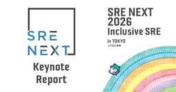

Qiita Zine
https://qiita.com/official-columns/
Dear Great Hackers
フィード

新しい日本語推敲スキル「yomiyasu」がバズっていたので、Claudeで日本語推敲スキル3つを比べてみた
Qiita Zine
2026/10/07に配信された Qiitaニュースのバックナンバーです。 Dear great hackers, こんにちは！いつもQiitaをご利用いただきありがとうございます。 先週いいねが多かった投稿ベスト20( […]投稿 新しい日本語推敲スキル「yomiyasu」がバズっていたので、Claudeで日本語推敲スキル3つを比べてみた は Qiita Zine に最初に表示されました。
4日前

【「SRE NEXT 2026」レポート】信頼性をビジネス価値へ変える「3つの実践」
Qiita Zine
2026年7月10日・11日、東京・有明にて「SRE NEXT 2026」が開催されました。本イベントは、信頼性に関するプラクティスや組織作りに深い関心を持つエンジニアが一堂に会する一大カンファレンスです。Qiitaは本 […]投稿 【「SRE NEXT 2026」レポート】信頼性をビジネス価値へ変える「3つの実践」 は Qiita Zine に最初に表示されました。
5日前

Qiitaニュース | 5分でJev入門（すぐ使う）
Qiita Zine
2026/09/30に配信された Qiitaニュースのバックナンバーです。 Dear great hackers, こんにちは！いつもQiitaをご利用いただきありがとうございます。 先週いいねが多かった投稿ベスト20( […]投稿 Qiitaニュース | 5分でJev入門（すぐ使う） は Qiita Zine に最初に表示されました。
11日前
画像最適化からクリエイティブ改善まで。Qiitaはいかにして、大規模UGC基盤に「Imgix」を活用しているのか
Qiita Zine
一般のユーザーが自発的に作成したコンテンツが集まるUGC（User Generated Content）サイトでは、スクリーンショットや図解、アニメーションGIFなど、運営側がサイズや形式を事前に把握できない画像が日々増 […]投稿 画像最適化からクリエイティブ改善まで。Qiitaはいかにして、大規模UGC基盤に「Imgix」を活用しているのか は Qiita Zine に最初に表示されました。
12日前
Qiitaニュース | AIっぽくない画像を作る画風プロンプト38種類＋テンプレート
Qiita Zine
2026/09/16に配信された Qiitaニュースのバックナンバーです。 Dear great hackers, こんにちは！いつもQiitaをご利用いただきありがとうございます。 先週いいねが多かった投稿ベスト20( […]投稿 Qiitaニュース | AIっぽくない画像を作る画風プロンプト38種類＋テンプレート は Qiita Zine に最初に表示されました。
25日前
記事投稿キャンペーン結果発表！「OpenAI・Anthropic互換APIを無料で使おう！『さくらのAI Engine』3,000リクエスト使い切りチャレンジ」
Qiita Zine
2026年7月14日から8月25日まで、記事投稿キャンペーン「OpenAI・Anthropic互換APIを無料で使おう！『さくらのAI Engine』3,000リクエスト使い切りチャレンジ」を開催しました！ご参加いただい […]投稿 記事投稿キャンペーン結果発表！「OpenAI・Anthropic互換APIを無料で使おう！『さくらのAI Engine』3,000リクエスト使い切りチャレンジ」 は Qiita Zine に最初に表示されました。
1ヶ月前
Qiitaニュース | 元ヤフーエンジニア社長が考える、20代のうちにやっておくべき3つのこと
Qiita Zine
2026/09/09に配信された Qiitaニュースのバックナンバーです。 Dear great hackers, こんにちは！いつもQiitaをご利用いただきありがとうございます。 先週いいねが多かった投稿ベスト20( […]投稿 Qiitaニュース | 元ヤフーエンジニア社長が考える、20代のうちにやっておくべき3つのこと は Qiita Zine に最初に表示されました。
1ヶ月前
Qiitaニュース | 個人開発をiOSアプリで半年やって「勝てない」と悟った話
Qiita Zine
2026/09/02に配信された Qiitaニュースのバックナンバーです。 Dear great hackers, こんにちは！いつもQiitaをご利用いただきありがとうございます。 先週いいねが多かった投稿ベスト20( […]投稿 Qiitaニュース | 個人開発をiOSアプリで半年やって「勝てない」と悟った話 は Qiita Zine に最初に表示されました。
1ヶ月前
Qiitaニュース | 新人AI禁止のあと、「新人AI制御教育ハーネス」を配った結果（Skill原文あり）
Qiita Zine
2026/08/26に配信された Qiitaニュースのバックナンバーです。 Dear great hackers, こんにちは！いつもQiitaをご利用いただきありがとうございます。 先週いいねが多かった投稿ベスト20( […]投稿 Qiitaニュース | 新人AI禁止のあと、「新人AI制御教育ハーネス」を配った結果（Skill原文あり） は Qiita Zine に最初に表示されました。
1ヶ月前
パーソルクロステクノロジーが描く、AI活用と人材育成
Qiita Zine
sponsored by パーソルクロステクノロジー株式会社（制作：アイティメディア株式会社） パーソルグループの事業課題に向き合うプロジェクトを担うパーソルクロステクノロジーのグループソリューション本部は、AI活用を一 […]投稿 パーソルクロステクノロジーが描く、AI活用と人材育成 は Qiita Zine に最初に表示されました。
2ヶ月前